|
|
ALL THE CANADIAN LOCATIONS HAVE BEEN FOUND
PAGE 68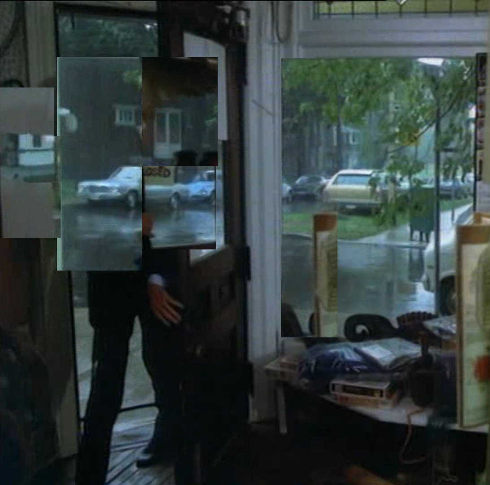


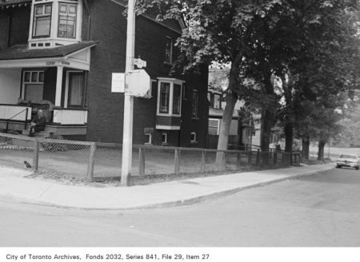
 1972
1972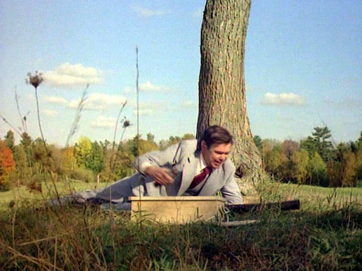
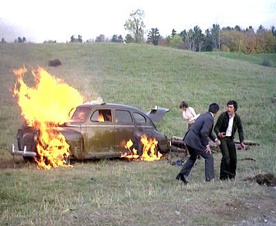
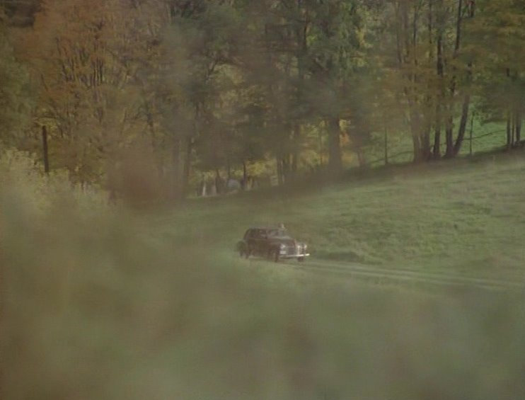
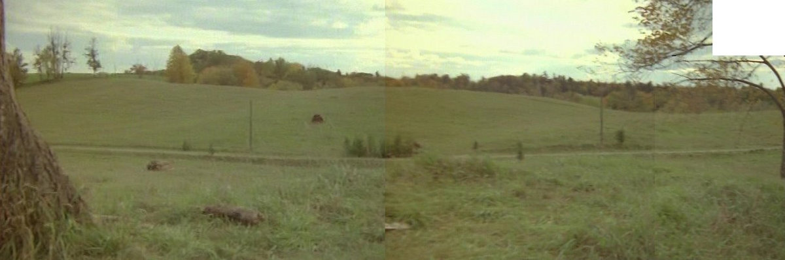
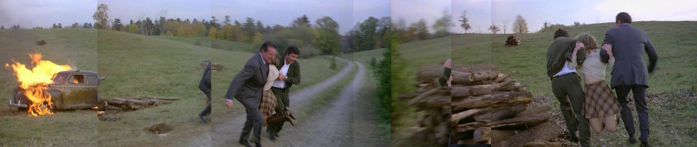

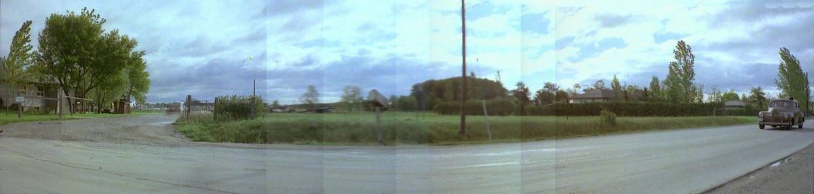
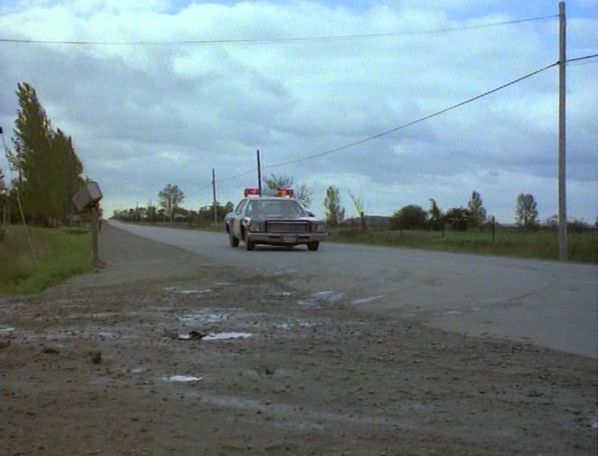
Street View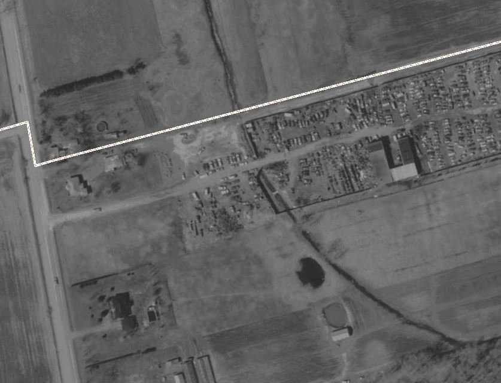
1978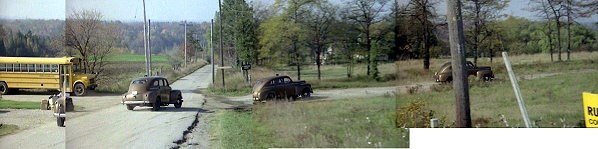
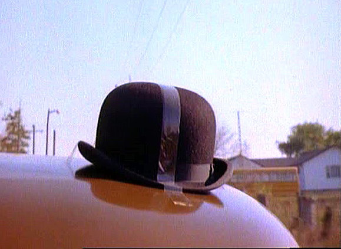
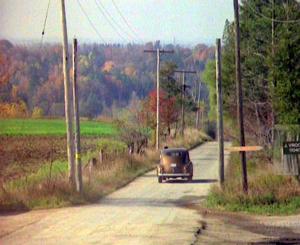
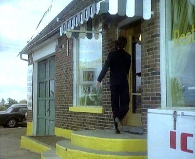
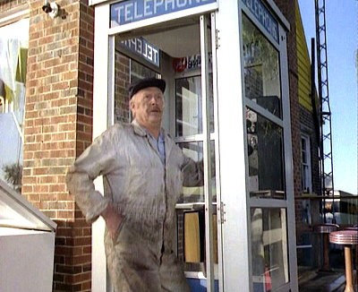
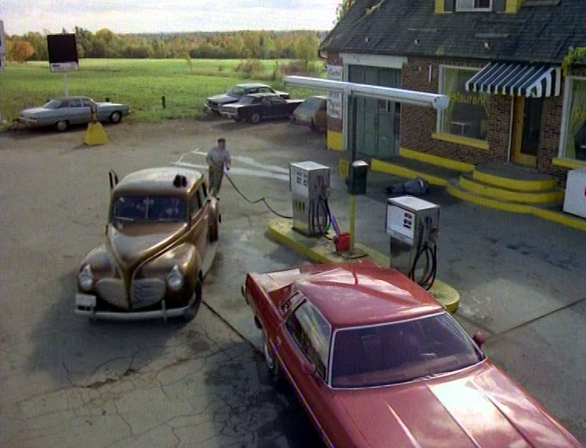
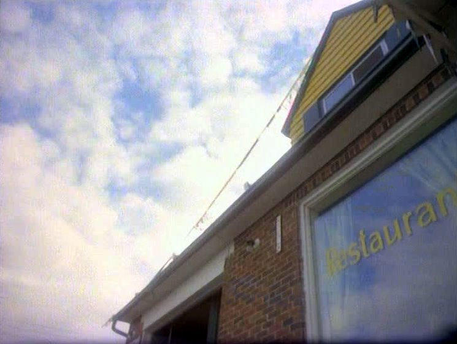
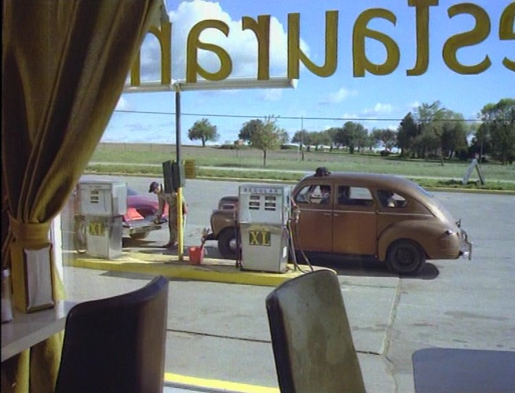
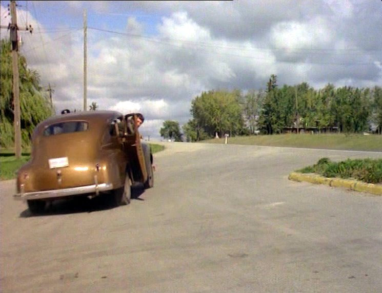
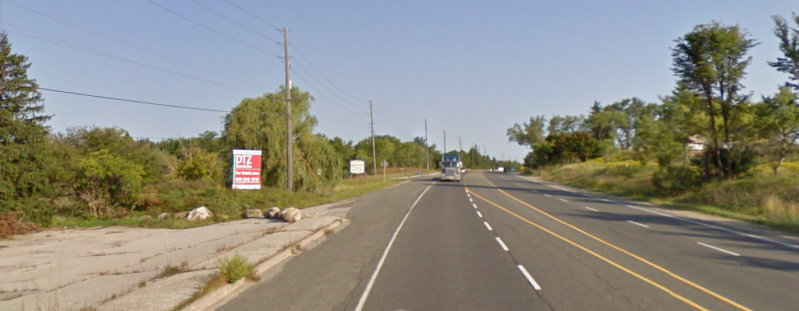
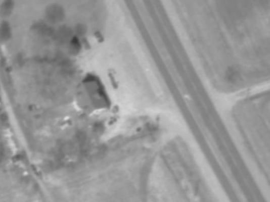
Street View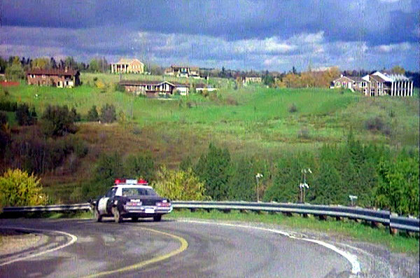
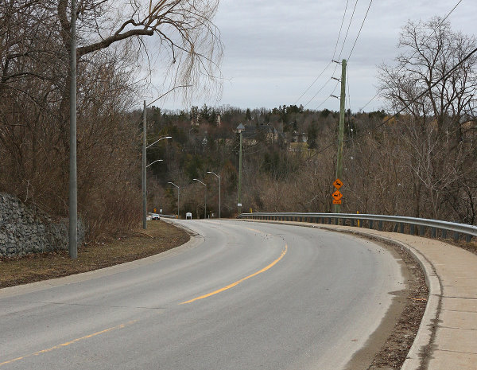
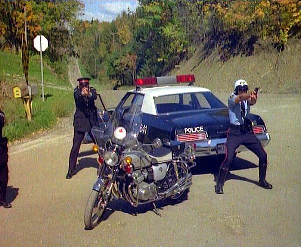
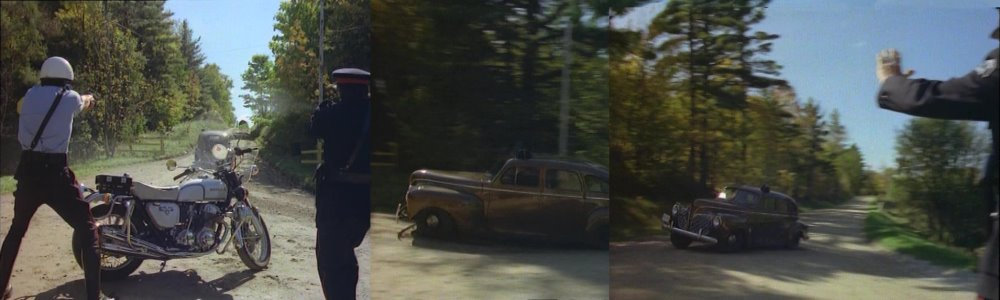
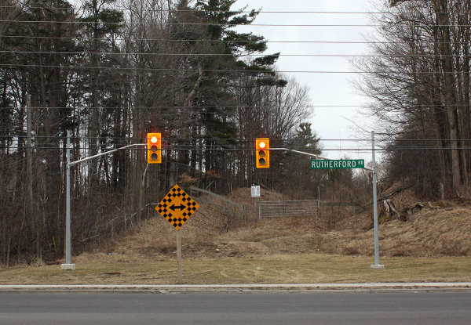
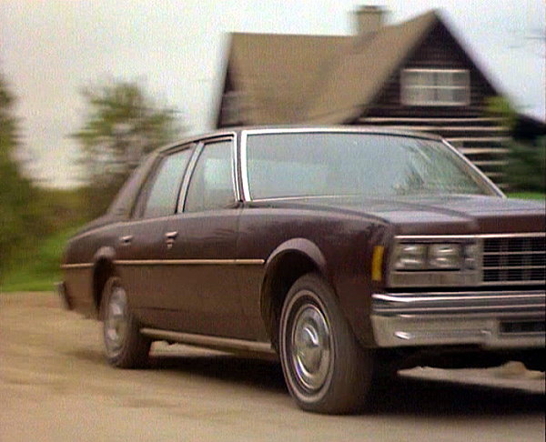

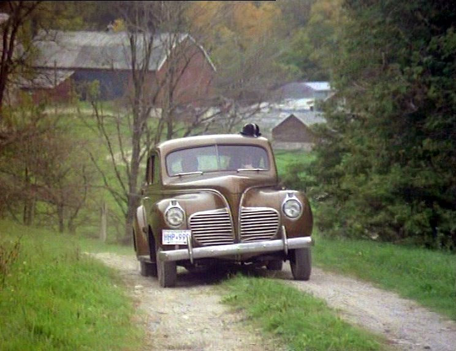
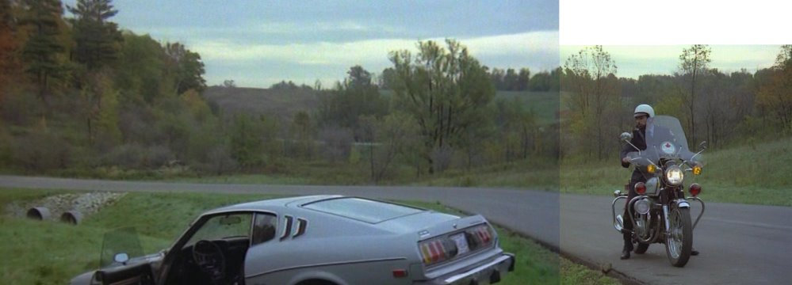

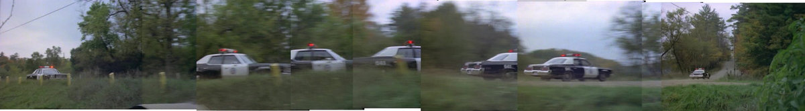
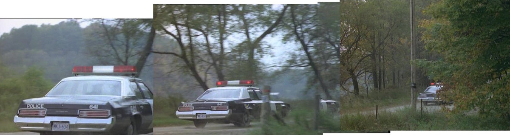
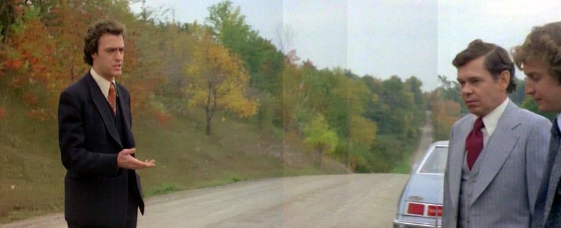
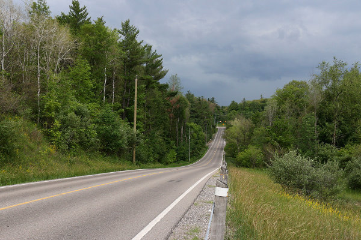
Think you know a spot? Need a bigger image? Email me.
< Previous | Index | Avengerland | Next >
Copyright © 2022 Anthony R. McKay